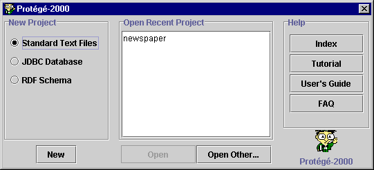
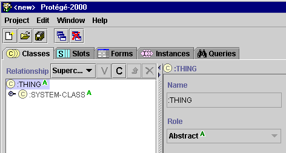

Creating
the Sample Project
Creating
the Sample Project

First, you must create a new project in Protégé format.
To create the
sample project when you start Protégé:
- Start Protégé. If you have a Protégé project already open, simply exit
and restart the program. (For information on creating a project from within
Protégé, see Creating a Project.)
When you start Protégé, a dialog box prompts you to create a new project, open a recent project, or
get help.

- In the New Project field at the left, make sure Standard Text Files
is selected. This will create a project file in Protégé-2000 format.
- Click New.
The Protégé window opens and the standard tabs become visible. A new
project always opens at the Classes view. The internal Protégé classes
THING and SYSTEM-CLASS are all that is visible. No instances will be
created.

You are now ready to save and name your Protégé project.
Next: Saving and Naming the Project
Getting Started With Protégé